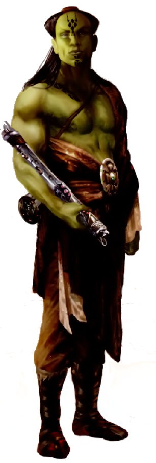

Mirialan
mirialan
Special Abilities: Mirialans begin the game with one rank in Discipline and one rank in Cool. They still may not train Discipline or Cool above rank 2 during character creation.
Mirialans are a near-human species from the planet Mirial. Their culture is characterized by a deep-seated faith and respect for an individual's destiny. Mirialans undergo ritual tattooing to represent the ways that they have overcome the obstacles that fate placed before them.
Mirialans are physiologically extremely similar to humans. Their most obvious departure from human norms is in their skin tone, which ranges in color from green to a paler yellow-green. Flair color tends toward blacks and browns, while eye color can encompass human tones in addition to yellow, orange, and red. They are generally regarded as capable martial artists, as Mirialans are typically both faster and more agile than humans.
Mirialan culture is defined by its religious beliefs. Mirialans believe that an individual’s destiny is defined by the decisions he makes and the actions he takes. Every decision builds upon those that have gone before to determine each person’s ultimate outcome. Because these choices embody an individual’s personal integrity, Mirialans choose to express this visually as well. Every significant event in a Mirialan’s life is illustrated by a tattoo inscribed upon his face, hands, or other commonly visible location. As Mirialans age, the pattern of tattoos becomes increasingly intricate and detailed. The different geometric patterns and locations of the tattoos form a visual representation of each Mirialan’s life story and suggest the role that the individual is likely to play in the planet’s future.
Because Mirialans are so open about their personal histories, their society holds an inherent level of stratification. Those who have enjoyed past successes are automatically recognized and lauded for their success, and trusted with greater opportunities. In contrast, an individual who has made poor choices early in life is less likely to receive opportunities for redemption. After all, anyone who meets an individual can immediately recognize the Mirialan’s past transgressions. Many who have made poor choices feel constrained to paths that limit them to an unfortunate ultimate outcome. Elowever, for many, their faith in fate can provide the motivation to transform their lives. Some believe that their mistakes serve as learning experiences for later challenges.
Mirial is located near the Hydian Way, not far from the Corporate Sector. The world is both dry and cold, which has forced the Mirialans to go to great lengths just to survive its challenges. Prior to the Clone Wars, the Trade Federation used Mirial’s need for imports to keep its inhabitants under its sway.
Mirialan is the native tongue of Mirial, though most Mirialans also learn Basic during childhood.
Mirialan religion is based upon their limited understanding of the Cosmic Force, which they identify as fate. Even those incapable of directly interacting with the Force have faith in fate’s presence and recognize that it is a guiding force in their lives. Because of this, Mirialans hold a deep-seated respect for Force practitioners. Before the Clone Wars, there was always at least one Mirialan Jedi in residence at the Jedi Temple.
A full lexicon of Mirialan tattoos and their various meanings would be extensive beyond the imagining of other species, and even most Mirialans cannot memorize the entirety of the tattoo lexicon. Part of the reason of this is the subtle interactions between the placement and positioning of different geometric shapes. A slight variation in spacing or placement on an individual’s face can drastically change the meaning of a tattoo set. While this ensures the Mirialans can portray the entirety of their life histories on their faces, it also means very few non-Mirialans can decipher the markings.